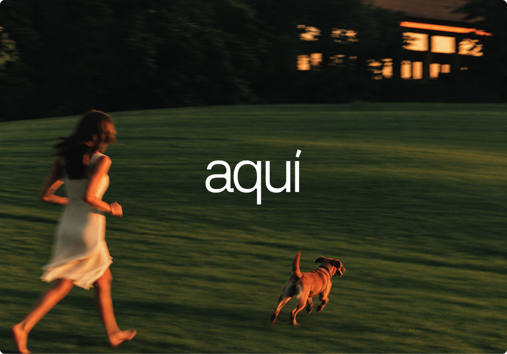
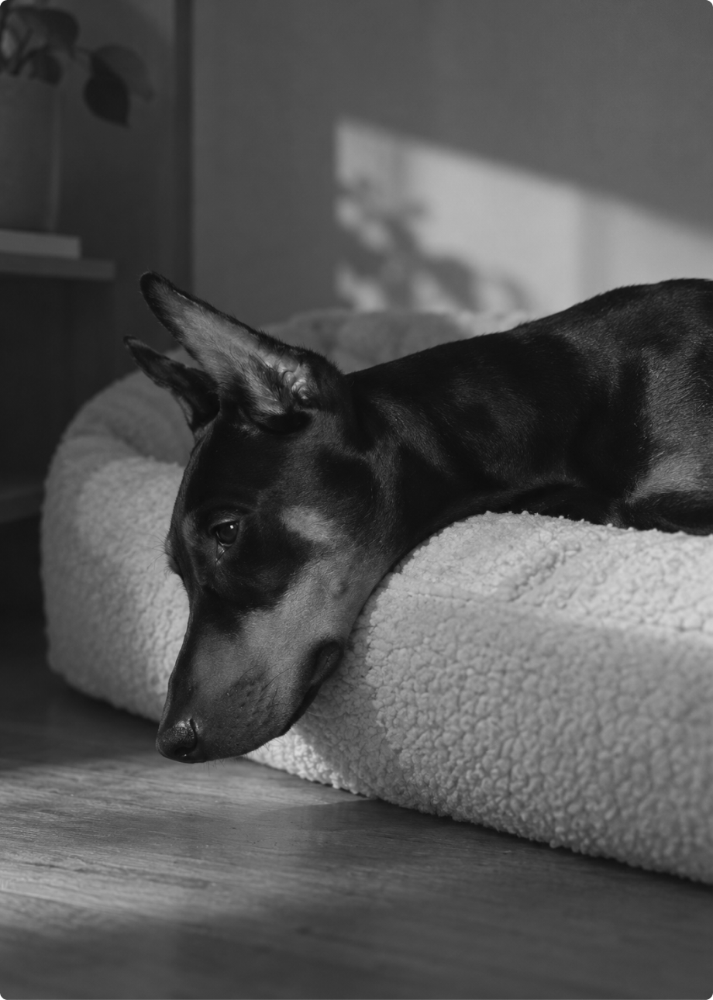
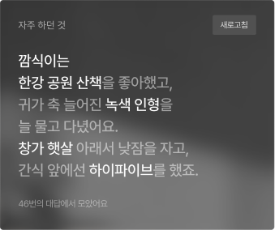
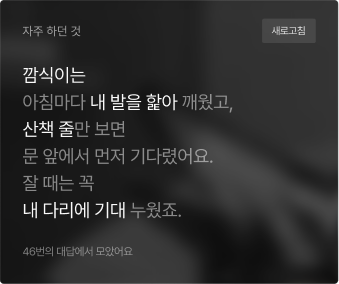
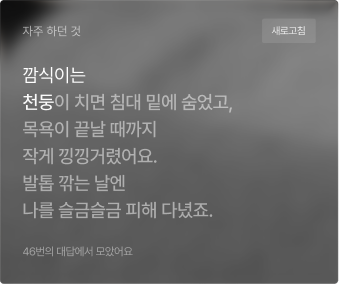

OVERVIEW
반려동물과의 이별은 누군가의 일상 전체를 흔들기도 합니다. 그리고 그 슬픔은 생각보다 오래, 다양한 모습으로 남습니다.
Losing a pet can upend everyday life. Grief often lingers longer than expected, taking many forms.


INTRODUCE
SERVICE
사별 전 마지막 돌봄부터
사별 이후까지 이어지는 펫로스 케어 서비스

아키는 반려동물과 함께하는 시간을 기록하고, 이별 이후 다시 일상을 이어갈 수 있도록 돕는 펫로스 케어 서비스입니다.
반려동물과의 사별을 하나의 사건으로만 보지 않고, 변화하는 보호자의 상황에 맞춰 필요한 경험을 설계합니다.
aquí is a pet loss care service that preserves moments shared with pets. With thoughtful
care through goodbye and beyond, it helps owners return to everyday life.

Chapter. 1
나의 오랜 친구,
깜식이를 소개합니다.
처음 만나던 날, 품에 쏙 안기던 작은 깜식이. 많은 시간을 함께
보내며 오랜 친구가 되었지요. 나이가 들어 예전 같지 않은 날도
있지만, 함께하는 하루가 조금은 더 이어졌으면 해요.
The day we first met, little Kkamsik fit perfectly in my arms.
Through all the time we've shared, we've become old
friends. There are days now when age shows, but I hope
we get just a little more time together.


깜식이의 하루에 언제나 함께하는
아키의 NFC 디바이스입니다.
This is aqui's NFC device,
part of everyday.
NFC Keyring
HOME
CARE LOG
ARCHIVE
반려동물의 상태와 일상을 꾸준히 기록할 수 있도록 아키의
NFC 디바이스를 사용합니다. 휴대폰에 가볍게 태그하면
연결된 반려동물의 케어로그로 바로 이동해, 필요한 순간
마다 번거로운 과정 없이 기록을 시작할 수 있습니다.
Keep a steady record of your pet's health and everyday
moments with aqui's NFC tag. Just tap it to your phone
to jump straight to your pet's care log, so you can start
logging whenever you need, no extra steps.
사용자가 설정한 반려동물 사진이 홈 화면을 가득 채우고,
오늘의 상태를 묻는 문구와 함께 기록을 바로 시작할 수
있습니다. 처음 마주하는 화면에서 반려동물의
하루를 자연스레 살피도록 돕습니다.
Check your pet's condition and records at a glance.
Key information is neatly organized for easy viewing,
so you never miss a change in their day.
식사, 투약, 활동과 상태 변화를 날짜별로 기록합니다.
쌓인 기록을 바탕으로 반려동물의 변화를 확인하고,
진료 전 필요한 내용을 빠르게 파악할 수 있습니다.
Track meals, meds, activity, and health changes
day by day. Over time, your records reveal
changes and keep you ready for vet visits.
반려동물과 함께한 순간을 사진과 영상, 음성으로 기록하고,
함께하고 싶은 일은 버킷리스트로 남깁니다. 일상 속
추억과 함께 하고 싶은 일을 하나씩 쌓아두고,
원하는 때 언제든 꺼내볼 수 있습니다.
Capture moments in photos, videos, and voice notes,
and build a bucket list of things to do together.
Revisit them anytime.


함께한 시간을 뒤로 하고, 우리는 이별을 맞았습니다.

Chapter. 2
이별 뒤의 일상도
아키가 함께 합니다.
늘 함께하던 존재가 떠나도 우리의 하루는 멈추지 않고 흘러
갑니다. 아키는 이별 직후부터 기억과 회복의 시간까지 함께
하며, 보호자가 남겨진 일상을 천천히 마주할 수 있도록 돕습니다.
Even when a beloved companion is gone, our days go
on. From goodbye through remembering and healing,
aquí stays by your side as you face the days that remain.
AFTER LOSS : MAIN
사별 직후 3일 동안 필요한 정보와 행동을 시점에 맞게 안내합니다.
반려동물을 위한 마지막 준비부터 기억을 돌아보고 잠시 쉬어가는
순간까지, 당장 필요한 것부터 하나씩 살펴볼 수 있습니다.
You can take your time reflecting on the moments spent together,
your bucket list, caregiving records, and answers to questions.
▪ Epilogue
사별 직후 확인해야 할 사항부터 장례 준비와 장묘 업체 탐색까지,
필요한 절차와 정보를 차례대로 살펴봅니다. 비슷한 경험을 한
보호자들의 이야기를 통해 공감과 위로를 얻고, 슬픔이 오래
지속되거나 일상에 영향을 줄 때에는 펫로스 전문 기관의
상담 정보도 확인할 수 있습니다.
From the first moments after a loss to funeral and memorial services,
get the guidance you need, one step at a time. Take comfort
in others' stories, and reach out to pet loss
counselors when grief lingers.
이별 준비를 돕던 메인 화면은, 3일이 지나면 추억을 안고 다시 일상으로 나아가는 공간으로 달라집니다.
Archive
함께한 일상의 추억부터 버킷리스트, 돌봄 기록과 질문 답변까지
그동안 남겨온 기록을 천천히 돌아볼 수 있습니다.
From memories and bucket lists to care logs and your answers
to daily prompts, revisit it all at your own pace.

Every little moment, still here.
생전에 남긴 질문과 답변, 꾸준히 이어온 돌봄 기록에는 반려동물의 평소 모습과
함께한 시간이 고스란히 남아 있습니다. 그 기록을 통해 최선을 다해
반려동물의 곁을 지켜온 시간을 확인할 수 있습니다.
You can take your time reflecting on the moments spent together, your bucket list,
caregiving records, and answers to questions.





함께 사용하던 NFC 디바이스는 이별 이후에도 추억을 간직하는 오브젝트로 남습니다.
보호자용 키링을 태그하면 그동안 남긴 기록과 기억을 다시 만날 수 있습니다.

*함께 사용하던 NFC 키링을 일상 속 익숙한 공간에 보관하는 모습입니다.
함께한 기록을 언제든 다시 돌아볼 수 있도록, 아키의 NFC 키링을
신청해 보세요. 휴대폰을 키링에 가까이 대면 소중한
사진과 기록을 다시 확인할 수 있습니다.
*보호자 정보
*배송 정보
*반려동물 정보
*본 신청 화면은 서비스 시연용으로, 실제로 접수되지 않습니다.